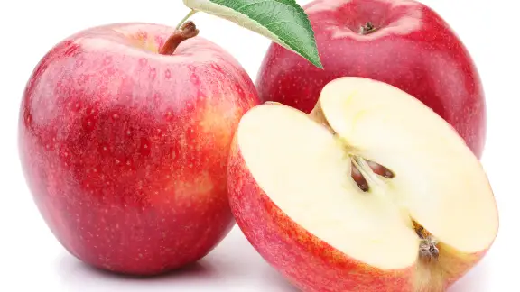

Les pommes sont des fruits croquants et juteux qui sont appréciés dans le monde entier pour leur saveur sucrée et rafraîchissante. Cultivées depuis des millénaires, les pommes viennent dans une variété de couleurs, de formes et de saveurs, chacune offrant une expérience gustative unique. Riches en fibres, en vitamines et en antioxydants, les pommes sont non seulement délicieuses, mais aussi bénéfiques pour la santé. Que vous les croquiez telles quelles pour une collation rapide, que vous les ajoutiez à une salade de fruits ou que vous les utilisiez pour préparer une tarte maison, les possibilités culinaires avec les pommes sont infinies.
